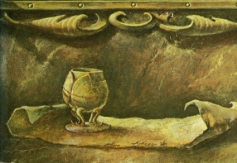

|  | The Treasure of Atlantisby J. Allan Dunn[1916] |
This pulp-fiction era yarn about Atlantis in South America is actually a fairly literate story with a big dollop of action. The story is similar to The Lost World without the dinosaurs. Our two heros stumbling on a trail of evidence leading to a mystical city deep in the Amazon, a shard of the lost contient where everyone speaks Ancient Greek, but live like Minoans, with a separate woman-only city devoted to worshipping a goddess. Go figure.
Dunn seems to have at least done some adequate amount of research on Atlantis, ancient Crete and travel in the upper Amazon. He includes details such as the double axe (one of which gets used as a weapon at one point, naturally). This is a virtual 'page turner' which makes a satisfying read, plus we get yet another concept for the location of Atlantis. And snappy dialog.
This was originally published in the magazine All Around, in December 1916, which specialized in adventure and action stories, including many which would later be identified as science fiction, by authors such as Edgar Rice Burroughs. The edition we scanned was a paperback edition published in 1970 by Centaur Press, and the pagination is based on this version. This was part of a series, the Time Lost. This edition is actually in the public domain because it lacked a properly worded copyright message so we have included material from it.--J.B. Hare, Dec. 24th, 2009.
Title Page
Introduction
Contents
Chapter I—The Flowing Road
Chapter II—The Vase of Minos
Chapter III—Laidlaw's Theory
Chapter IV—Caxoeira Canyon
Chapter V—Kiron
Chapter VI—The Gates of Dor
Chapter VII—The Queen Advances
Chapter VIII—Aulus the Gladiator
Chapter IX—The Initiation
Chapter X—The Isle of Sele
Chapter XI—The Judgment of Ru
Chapter XII—The Hall of Sacrifice
Chapter XIII—The End of Atlantis
Advertisement
Back cover copy